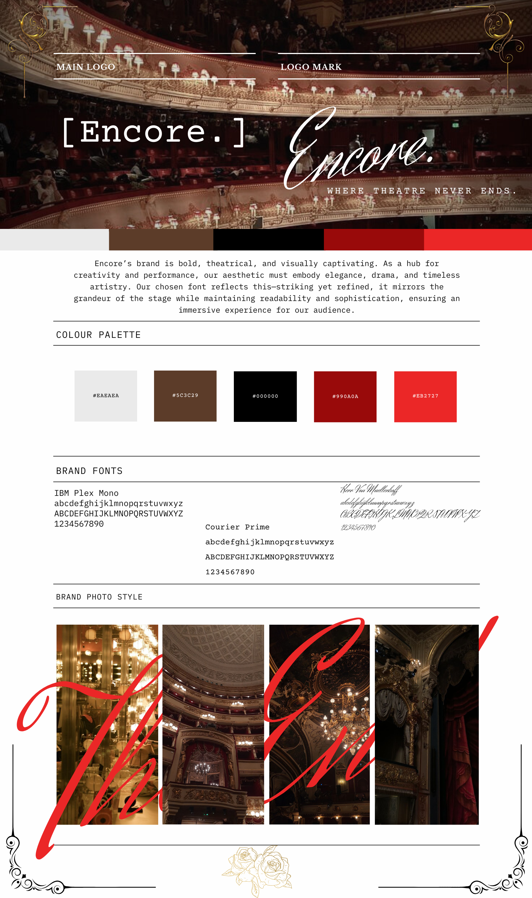

General
This website is publicly available at https://selenakruithof.github.io/Encore/
This website was created by:
- Selena Kruithof (211309)
- Lea Häuser (225581)
- Viltene Gylyte (234211)
- Shiromenie Kaulesarsing (231443)
Content
View Content Document here with references| # | Student ID | Content | Name and link of content |
|---|---|---|---|
| 1. | Selena Kruithof (211309) | Homepage,Corporate information, Brand name/logo, Prodution, Objectives, Professionalism, Unfair Advantage, Channels, Key Metrics, Revenue Streams, shows&tickets | links to what i did |
| 2. | Lea Häuser (225581) | Content, Brand Value, Objectives, Channels/Platforms, Unique Value Proposition, Unfair Advantage, FAQ Page | x |
| 3. | Viltene Gylyte (234211) | Content: Brand Vision, About Page, Campaign, Communication and Media Plan, Future Communication and Media plan, Problems, Solutions, Service/Products, Testing Report | x |
| 4. | Shiromenie Kaulesarsing (231443) | Brand Persona and Justification, Target Audience and Justification, Learning Points,Lean Canvas summary, Customer Segments, Brand Persona, Channels, Shows and Tickets page | x |
Brand Name
“Encore” is that moment where the passion of life perforamce is captured. They need just one more song, one more scene, one more moment. And that is exactly what we are trying to bring to our site. It's a space for people who want more, not just shows but stories, drama and more of everything. Naming the site “Encore” reflects this ongoing engagement that we are after. It's a call for more performances, even when after the stage goes dark.
Brand Logo


Our logo is styled simply and intentionally in Courier Prime. This is because it gives of that trending vintage look of a classic typewriter font, which is seen in scripts for screenplays. This simplicity reflects our brands values of open information and easy access for anyone. It's a timeless font that is both classic and comforting to the eye.
We also created a logo mark which is very expressive and artistic to show we still want to keep that classy look.
Brand Vision
In a world where people are numbed by never-ending screens and digital moments, Encore believes in the irreplaceable power of live theatre, the laughter, the gasps, the shared stillness. We acknowledge that storytelling isn’t just amusement; it holds the power to reconnect us to the world, each other, and ourselves. By reigniting presence and empathy, only then do we ignite something meaningful: the urgent need to feel, to be seen, and to truly belong.
Brand Value
Accessibility: Making the theatre experience available to everyone with seamless ticketing and inclusive options. Ensuring that everyone, regardless of background or ability, can enjoy and participate in theatre. Transparency: Providing up-to-date show schedules, ticket availability, and trustworthy recommendations for an informed experience. Passion: Keeping the magic of live performance alive by supporting artists, audiences, and the industry with dedication and enthusiasm.
Brand Persona

Justification of Brand Persona:
For the Brand persona, we decided to not pick the obvious theatre lovers who are experts on where to find what but to target the people who are new to this theatre interest and would like more clarification, which is a large amount of people. The European Theatre Convention states: “Many European theatres lack separate budgets for marketing and communication, leading to limited use of traditional print media like brochures or programs. As a result, audiences often rely on fragmented sources such as friends, prior visits, or basic digital communication via theatre websites.” But because we can not check if these sources from friends or prior visits are real or what if people do not have any friend or family connections to theatre, where do they find their information? We summarized all of these problems in the theatre community and created the following pain points:
- Complex Dramaturgy: Audience members reported confusion and irritation with theatre performances that presented simple stories in overly complicated ways, leading to fragmented engagement. (Audience Development Study, n.d.)
- Speculative Ticketing: Brokers exploit theatre fans by advertising tickets they don’t own, often leading to invalid purchases or inflated prices (e.g., tickets resold at 5x face value). (Duncan & Duncan, 2021) and (Izundu, 2025)
- Fragmented Promotion: The absence of centralized hubs for theatre information forces audiences to rely on unreliable sources, hindering discovery of indie productions. (Professional, 2024)
For the apps we used the average apps people use from that age range and where they are most active. The target audience is not as active on Ticketmaster as Instagram and TikTok but since it is a ticketing platform that puts everything in one app we wanted to create the same concept as them, having all theatre plays in one reliable website with all information. Instagram's largest age group is 18-24 years old, making up 31.7% of users. TikTok's user base includes a significant portion of young adults, with 25% of US users aged 18-24 (Sheikh, 2025).
Visual Identity
- Colour Palette
- #eaeaea: I started with this soft gray as my primary background color. Pure white felt too stark and sterile, but this shade adds a bit of warmth and subtlety without stealing the spotlight from the bolder colors. It gives the content room to breathe and helps everything else stand out more clearly.
- #5c3c29: This brown adds depth and a grounded feel to the design. I liked using it for shadow borders, or background areas where I wanted contrast but didn’t want to jump straight to black. It’s a nice in-between that keeps things cohesive, especially alongside the reds. Makes the white and greys pop out.
- #000000: Black is classic and powerful, so I reserved it for elements that needed serious impact like headlines, important buttons, and bold visual anchors. It gives the whole design a strong foundation and adds a touch of theatrical drama, which ties perfectly into the theme of the site.
- #990a0a: This is the color that really captures the essence of theatre for us. It’s rich and intense, like red velvet curtains or stage lighting. I use it for things like text highlights and most of the important messages we try to highlight for the user, like in the FAQ.
- #eb2727: To energize the site and draw attention to key areas, I brought in this brighter red. It’s perfect for call-to-action buttons or anything I want visitors to notice immediately. It adds that spark of excitement, while still fitting in with the rest of the palette.
- Font choices:
- IBM Plex Mono: We decided to use this font because it reminded us most of Times New Roman. A font that every student has worked with a lot and likes, which aligns best with our interview research.
- Courier Prime: Used in our logo that is styled simply and intentionally in Courier Prime. This is because it gives that trending vintage look of a classic typewriter font, which is seen in scripts for screenplays. This simplicity reflects our brands' values of open information and easy access for anyone. It's a timeless font that is both classic and comforting.
- Herr Von Muellerhoff: Used in our logo mark. This one was all about adding a personal, artsy touch when we were first starting out. Super elegant, kinda fancy, and gives off creative energy. Even though we’ve moved toward a cleaner look, it’s part of our brand’s origin story, that early spark of expression and individuality.
With these visuals, we wanted to create a warm and inviting atmosphere that immediately welcomes the user into the world of Encore. The aesthetic is intentionally chosen to reflect the essence of classical theatre, rich in emotion, tradition, and storytelling, while of course also feeling refined and modern. Warm tones, elegant typography, and expressive imagery work together to evoke that sense of sophistication and comfort. This blend of warmth and elegance sets the tone not only for the user’s journey through the site but also mirrors the kind of experience they can expect within the theatre itself.
Production
View Production Document here with referencesDesign Elements
To keep our structure clean and accessible for all users we went with the following page structure:
- Home
- About
- Shows & Tickets
- FAQ
Home:
-
Video:
Showing a video on page load adds a fancier, expressive feel. Since theater is dramatic, we used an acting scene to visually "pull" users into the site. -
Meet Our Productions:
This section highlights new, niche productions, supporting visibility and interaction. It aligns with Gen Z’s value of supporting authentic creators. -
Latest Theater News:
Keeps visitors up to date with trendy news using a clean grid layout to avoid overwhelming them. -
Personalized Newsletters:
Offers filtered content tailored to the user's interests, sent via email. This is handled separately to reduce clutter. -
Get In Touch:
A homepage contact section that fosters openness and approachability. Makes it easy to collaborate, ask questions, or give feedback.
About:
- Focused on introducing the team, values, and mission. It's kept simple and direct to avoid overwhelming users.
Shows & Tickets:
-
Now Showing:
Highlights current and niche performances, building excitement and encouraging exploration. -
Last-Minute Deals:
Encourages spontaneous ticket purchases and helps fill empty seats—ideal for budget-conscious or flexible users. -
Venues:
Offers details about performance locations including accessibility and ambiance, helping users make informed decisions. -
Buying Tickets:
Guides users through a clear and simple ticket purchase process, suitable for both first-timers and regulars. -
Subscriptions:
Provides a streamlined way for users to stay engaged over time with a clean and straightforward layout.
FAQ:
- Uses an accordion layout to keep things clean and user-friendly. Allows users to interact easily, and includes a contact option for unanswered questions.
Credits
- UX patterns used in the source code have been provided by Bootstrap and W3Schools.
- ChatGPT was used to assist with coding and improvement ideas.
https://html.design/?s=rock
Video by CottonBro on Canva via Pexels (video used under license from Canva Pro).
- Canva. (2025). play 1. Canva.
- Canva. (2025). play 2. Canva.
- Canva. (2025). play 3. Canva.
- Canva. (2025). play 4. Canva.
- Canva. (2025). theatreboy. Canva.
- Canva. (2025). theatregirl. Canva.
- Canva. (2025). theatregirlsocial. Canva.
Testing Report
View interview folder here- In order to know if our website works and if it fits our audience we asked people to test it. In total we had 8 participants in our group. The participants were 3 girls and 5 boys, young adults between 19-21 years old. These students do not know anything about our website yet and therefore have an uninformed position. To properly test our website they have two tasks to do on our website. Testing was recorded on the phone; you can find them in the VIDEO PROOF.
- Protocol:
- -What is your first impression of the home page?
- -You can scroll through the home page now. What do you think of the design/layout?
- Task 1:
- -.Can you find our website’s message?
- -How easy was it to find this information?
- -What did you think of the About Us page?
- Task 2:
- -Navigate the website to find a list of upcoming shows or events.
- -Choose a show that interests you and go through the process of buying a ticket (or getting to the point just before purchase).
- -Was it easy to find the shows or events section?
- -Did anything feel confusing or frustrating during this task?
- Findings:
- By observing the participants and taking notes of their feedback we noticed two main issues in the “shows & tickets” section:
- 1. Confusion around navigation with scrolling is needed but not immediately obvious.
- 2. The "Buy Now" button is not linked to the correct section, leading to extra steps.
- The participants were also asked questions while testing the website. These were the main positive and negative findings.
- Positive:
- -Most participants complimented the design and layout of the website, calling it clear, attractive, and high quality.
- -Attendees found the website’s message clear once they located the "About Us" page. The design aligned well with the message and communicated the brand's visual identity.
- -The "About Us" page was easily found by most testers as the place where the brand’ message was located. Which meant that once users knew where to look, the core message was easy to locate.
- -The responsive design was positively noted, with testers mentioning that the website adapts well across different devices and looks elegant.
- -Most of the participants had a strong first impression of the home page, mentioning that it was attractive and well-designed, contributing to a positive initial user experience.
- Negative:
- -Participants had problems while navigating the website smoothly, especially when trying to find the ‘“shows & tickets” page. They said that they didn’t know where to go next or had difficulty identifying clickable areas.
- -The “Buy now” button caused confusion to most of the participants as it did not link directly to the purchasing process. Users were expecting to be taken to the checkout page immediately but had to scroll down further to reach it. This caused unnecessary steps in the process.
- -Some participants didn’t realize that they needed to scroll down to the page to find the full ticket purchase, leading to confusion.
- Improving suggestions:
- After we tested our website we decided to apply the feedback on it immediately. For the “Buy now” we eliminated the button altogether and replaced it with clearer, more intuitive ticket options. The prompt is now much more noticeable, and people can easily see the available tickets for each show. Additionally, we decided to redesign the page itself. “Shows & tickets” now have a new clear layout. These changes will significantly enhance the understanding and ease of navigation, making the ticket-buying process smoother and simpler.
Marketing
View Marketing folder hereReferences
Context of Campaign
“Encore's” marketing campaign is designed to apply to theater lovers in the Netherlands among young adults (ages 18-25). The focus is on engagement through social media platforms Instagram and TikTok, where this demographic is highly active. The message centers that “Encore” is way more than just a ticketing platform, it’s a gateway to the magic of live theater. The campaign highlights the importance of making theater feel accessible and enjoyable for all. As the go-to website for discovering small productions and last minute tickets. Through targeted content creation, including reels and stories on Instagram, and trendy, engaging videos on TikTok, the campaign aims to captivate the target audience's attention. The content will showcase relatable and fun content for people who enjoy theater. This can be further seen in our COMMUNICATION AND MEDIA PLAN. The campaign's achievemnets will be measured by specific engagement metrics such as reach, follower growth, and interactions, which can be easily viewed on Instagram’s and TikTok’s accounts.
Objectives
- By the 14th of April, we aim to expose at least 100 people to our brand through our newly launched website, which is designed specifically for theater lovers. Our platform addresses key frustrations that audiences face, like struggling to secure last-minute tickets for popular shows, difficulty discovering smaller productions, and the challenge of finding accurate, up-to-date show schedules and recommendations. By providing a user-friendly experience with real-time ticket availability, current show listings, and reliable performance insights, we empower theatergoers but also non theatergoers to make informed choices effortlessly. Our goal is to make live theater more accessible, visible, and engaging for all. Success will be measured through website traffic, unique visitors, time spent on the site, and engagement with key features. Our platform will provide:
- Ticket Availability: By partnering with popular ticket providers and integrating real-time availability, users will be able to easily access seats for both popular and smaller shows, even at the last minute. We will ensure that our website displays the most up-to-date ticketing information, making it the go-to source for theatergoers looking for quick and reliable access.
- Discoverability of International and Smaller Productions: Our website will feature an exclusive section dedicated to promoting international productions and smaller, lesser-known performances that are often overlooked by mainstream platforms. Through curated listings and tailored recommendations, we aim to expose audiences to diverse theater experiences they might not discover elsewhere.
- Accurate Show Information: We will work closely with theaters and production companies to maintain an up-to-date database of show schedules, venue details, and relevant show information. Additionally, our website will provide helpful filters and a search function to allow users to quickly find shows that match their preferences. This ensures a streamlined, stress-free experience for our visitors, saving them time and frustration.
- Instagram:
- Reach: By the end of 14/04/2025, Encore aim for 150 people to be exposed to our brand through our Instagram content.
- Affect: By the end of 16/04/2025, we aim for 100 people to feel excited and inspired by the accessibility and magic of live theater, recognizing Encore as their go-to platform for discovering and booking shows.
- Response:
- By the end of 16/04/2025, Encore is going to have 20 people subscribe to our website newsletter.
- By the end of 16/04/2025, Encore is going to have 150 people follow and engage with us on our Instagram account.
- Tiktok:
- Reach: By the end of 16/04/2025, Encore aims for 70 people to discover Encore through our TikTok content (views, shares, and profile visits).
- Affect: By the end of 16/04/2025, Encore aims for 50 people to feel excited and curious about live theater, seeing it as more accessible and fun through our TikTok videos.
- Response:
- By the end of 16/04/2025, Encore aims for 50 followers on our TikTok account.
- By the end of 16/04/2025, Encore aims for at least 7 people to actively engage with our Tiktok content (comments, duets, stitches).
- We as a brand decided to not only use Instagram's long-known popularity, but also TikTok with its uprising and ongoing success. In general, we will measure our campaign's results from a timespan of four weeks. We decided to create an objective for a whole month since it gives us as a brand a clearer long-term vision and more space to adapt and grow. A month provides enough time to build consistency, track our progress, and make adjustments without constantly resetting goals every week. We chose a rather high number in our reach objectives for Instagram since Instagram has great engagement potential e.g. they have a strong user base for visual content. Since TikTok is still in the process of expanding across all e.g. demographics and isn’t as widely used as Instagram, we decided to decrease the amount of people Encore would like to reach through TikTok since its not as popular as Instagram. For measurements, we used the analytics which Instagram and TikTok provide.
Target Audience
- Our target audiences exists out of a group of theatre lovers of ages between 18-25 who often visits museums and cultural events and are socially active, enjoys post-show discussions, and often shares theater experiences on Instagram & TikTok which makes it perfect for our digital marketing campaigns to reach the most we can and inform them of our website.
- From research we have figured out that our target group (Gen-Z) uses Instagram, TikTok and Youtube the most. but since Youtube did not have a high brand engagement number we decided to leave it out for our marketing and media plan and to focus on TikTok and Instagram because:
- Gen Z users (including 18-25-year-olds) are 77% more likely to discover products on TikTok and 63% more likely to use it for news compared to other platforms, making it their preferred platform for discovery and interaction (Sheikh, 2025b).
- And for Instagram 72% of Gen Z users turn to Instagram for brand interactions (Sheikh, 2025c). And Instagram Reels, a key feature for younger audiences, boasts an average engagement rate of 6.59% for mid-sized accounts (100k–500k followers), outperforming other post types (Latest Instagram Statistics (2025) | StatsUp, n.d.)
Channels and Platforms
- Platforms
- Based on research, young adults aged 14-22 years reportedly indicated that they actively use WhatsApp and Instagram, making WhatsApp and Instagram the most used app in this generation (Dixon, 2024).
- Since previous years, TikTok has become increasingly used by this age group, making it more relevant in this generation (Dixon, 2024).
- Based on this information, we decided to use Instagram and TikTok since they both have similar features and we can easily adapt posts accordingly, if necessary.
- Social Media Schedule
- In general, our target audience uses social media platforms for about 2,5-4h daily (Augustus, 2023; (Dixon, 2024a)).
- When it comes to the younger demographic of our target audience, it was reported that they spend from those four hours 85% on Instagram, (84% on Youtube) and 45% on TikTok (Augustus, 2023).
- Therefore, we decided to use Instagram to post our content on since its the most used app for young adults and TikTok has become increasingly used and important by this age group, therefore having a high chance of growing success.
- Since both social media platforms have similar features, it is easier to be present on both platforms with the same content which curates consistency.
- Based on research on what times its best to post on both social media platforms, we created a social media content plan which ensures to reach our target audience at the right time.
- We will post on both platforms four times a week since we are also busy with other school assignments and this is much more realistic rather than creating an unreliable posting schedule which might have negative effects on our goals (e.g. reaching a certain amount of people, specifically in our target audience).
- And we would post the same content on both platforms on the following days:
- Monday (to start off the week strong)
- Thursday (since it ranks high on the list when its great to post and people are beginning to think about the weekend)
- Friday (People are winding down and planning their leisure activities)
- Saturday (This slot captures users as they wake up and begin to plan their day, making it an excellent time to engage with our audience and inspire them.) (Agarwal, 2025)
- Content
- After some research, we decided to focus on reels and stories when posting on social media.
- However, we considered hosting lives and posting picture content as well.
- Especially, Gen Z values authenticity and transparency in brand communication (Nerds, 2023).
- Since Gen Z has such a short attention span, Reels and Stories are perfectly designed to capture and maintain their attention span, making them the perfect format to choose (Nerds, 2023).
- Even stories are a great way to maintain their attention span.
- Furthermore, Lives can foster real-time connection (Nerds, 2023).
- However, since Instagram relies on algorithm, we as a brand need to maintain a regular posting schedule.
Learning Points
Future Planning
Professionalism
- We aimed to stay as aligned as possible with the brand identity we envisioned for Encore. However, when it came to TikTok specifically, we encountered a number of challenges that made it clear our promotional efforts were not reflected back in views. As a result, our TikTok presence was inconsistent, and the platform didn’t reflect the energy or clarity we had initially planned.
- All promotional content and justifications can be found in the communication and media plan. We tried to stay consistent with the brand style, image, and vision.
- Instagram: https://www.instagram.com/encorebuas/
- TikTok: https://www.tiktok.com/@encore741
Instagram Summary
TikTok Summary
Management
View Management folder hereReferences
Interviews
Lean Canva
Problem/Solutions
- Problems:
- Ticket Availability: The first problem that we discovered for theater lovers while doing problem interviews and some research was securing tickets for popular shows, especially at the last minute. Many people are facing sold-out performances or exorbitantly priced resale tickets. Our problem interviews revealed that existing ticketing platforms often fall short, either relying on long waitlists or pushing users into costly secondary markets. “Encore” aims to address these issues by offering a more reliable and affordable solution for theatergoers to easily access tickets for the shows they love.
- Poor Promotion & Show Discovery: The second problem that we came across during our research and problem interviews was that people weren’t exposed to smaller theater productions so much. Theatergoers have limited awareness of lesser-known performances, which often struggle to gain visibility. This little exposure makes it difficult for smaller productions to reach a wider audience, as people typically only discovered these shows through word-of-mouth or by chance, rather than through a more centralized and consistent source of information.
- Lack of Show Information: The third problem we found through our research and problem interviews was that individuals have problems finding updated schedules and ticket availability. Existing websites are often unreliable—many theater websites are outdated, third-party sources lack consistency, and information is scattered across multiple platforms. This fragmentation makes it difficult for users to find the information they need in one place, leading to confusion and uncertainty when planning their theater visits.
- Solutions:
- Solution 1: “Encore” solves the ticket availability problem by providing real-time updates on ticket availability and last-minute alerts. This way we can be sure that people can easily access both regular and last-minute tickets for smaller productions and popular shows. By offering live ticket updates, our website helps people stay informed about available plays and provides timely alerts when tickets become available. This solution ensures a legitimate and efficient way for users to secure tickets, even at the last minute, without resorting to expensive resale options.
- Solution 2: We tackle the issue of poor promotion and difficult show discovery by offering personalized subscription options to each individual. Encore offers a simple subscription model, users can receive recommendations and updates about local productions based on their interests. This personalized way will ensure that theatergoers are exposed to a wider range of performances, including those that might otherwise go unnoticed. By centralizing show information in one platform and delivering curated content directly to users, our website helps theater lovers to discover new and exciting shows they might have missed.
- Solution 3: We solve the problem of unreliable show information by offering a centralized platform where users can access correct, refreshed schedules, ticket availability, and trustworthy recommendations. As mentioned in the second solution through the personalized subscription, theatergoers can receive tailored show suggestions based on their preferences, and stay informed with the latest details directly from the platform to their email. Additionally, the website allows users to share their recommendations, ensuring the information is not only current but also relatable and accurate. This community-driven approach helps build trust, giving theatergoers confidence in their choices and eliminating the need to search through multiple unreliable sources, ultimately simplifying the process of planning their theater visits.
Customer Segments
- Primary customers:
-
1. Theatre lovers who frequently visit are passionate about live performances and regularly attend shows. Often struggle with ticket availability, especially for popular performances. Always looking for new shows to attend. - 2. Theatre lovers who go once in a while or last-minute buyers lack awareness of upcoming shows and find it difficult to find the right and actual show/ticket information. Last-minute buyers need quick access to tickets and often face issues with sold-out performances or overpriced resale tickets. Require real-time alerts for last-minute seat availability. And also an overview of correct information on the shows.
- 3. Theatre producers and promoters struggle with visibility and need a platform to effectively promote their productions targeted towards a younger audience. They also would benefit from targeted marketing and personalized show recommendations to users. (Benoit-Bryan, 2025)
-
- Ideal customer characteristics
-
Early adopters: Curious people who are willing to try out new things
-
Unique Value Proposition
A continuously updated collection of theatre performances that can be filtered by personal show preferences, location, and budget to help users find their ideal performance. Users will be reminded about new-, recommended- and recurring performances not only through the website but also through the (subscribed) newsletter. Overall, our brand offers accurate show information that is accessible and easy to find on our website, leaving users with certainty and satisfaction. Providing accurate show information also includes making smaller productions more visible, giving not only them a chance to succeed in the world of theater, but also to effortlessly be discovered by our users. As a brand, we value inclusivity, therefore, we offer online viewing options for those with mobility challenges or disabilities, ensuring that everyone can experience the magic of theater, no matter where they are. Because we believe theater should truly be for everyone.
Brand Persona
- Justification of Brand Persona:
- For the Brand persona, we decided to not pick the obvious theatre lovers who are experts on where to find what but to target the people who are new to this theatre interest and would like more clarification, which is a large amount of people.
- The European Theatre Convention states: “Many European theatres lack separate budgets for marketing and communication, leading to limited use of traditional print media like brochures or programs. As a result, audiences often rely on fragmented sources such as friends, prior visits, or basic digital communication via theatre websites”
- But because we can not check if these sources from friends or prior visits are real or what if people do not have any friend or family connections to theatre, where do they find their information?
-
We summarized all of these problems in the theatre community and created the following pain points:
-
Complex Dramaturgy: Audience members reported confusion and irritation with theatre performances that presented simple stories in overly complicated ways, leading to fragmented engagement (Audience Development Study, n.d.). - Speculative Ticketing: Brokers exploit theatre fans by advertising tickets they don’t own, often leading to invalid purchases or inflated prices (e.g., tickets resold at 5x face value) (Duncan & Duncan, 2021) and (Izundu, 2025).
- Fragmented Promotion: The absence of centralized hubs for theatre information forces audiences to rely on unreliable sources, hindering the discovery of indie productions (Professional, 2024).
-
- For the apps we used the average apps people use from that age range and where they are most active. The target audience is not as active on Ticketmaster as Instagram and TikTok but since it is a ticketing platform that puts everything in one app we wanted to create the same concept as them, having all theatre plays in one reliable website with all information.
- Instagram's largest age group is 18-24 years old, making up 31.7% of users.
- TikTok's user base includes a significant portion of young adults, with 25% of US users aged 18-24 (Sheikh, 2025).
Unfair Advantages
The ability to filter performances based on personal show preferences, location, and budget creates a highly tailored user experience that is difficult to replicate without sophisticated technology and data insights.
Channels
- Marketing Channels:
- The main channels we plan to use are social media and partnerships between theatres and producers in which we can collaborate with for example ticket deals and or special promotions.
- On social media we can also make use of influencers who review or promote our website.
- Through social media we can reach the target group since they are mainly on social media platforms.
- Based on research, young adults aged 14-22 years reportedly indicated that they actively use WhatsApp and Instagram, making WhatsApp and Instagram the most used app in this generation (Dixon, 2024).
- Since previous years, TikTok has become increasingly used by this age group, making it more relevant in this generation (Dixon, 2024).
- Based on this information, we decided to use Instagram and TikTok since they both have similar features and we can easily adapt posts accordingly, if necessary.
Key Metrics
- Ticket sales performance:
- Total ticket sale revenue.
- Number of tickets sold.
- User engagement:
- New sign-ups per month on the main website.
- Conversation rate; to see how many sign-ups lead to their ticket purchase.
- Active users.
- Social media analytics:
- Promotion revenue; view income after producers paid for their visibility.
- Ads; to view how engaging our promotions are.
- Social media engagement; our Instagram, TikTok, and newsletter effectiveness.
- Memberships:
- Amount of paying members.
- Online viewing:
- Number of online stream purchases.
- Average viewing time; the amount of engagement with the online provided content.
Revenue Streams
- DISCLAIMER: The currency values have been converted from USD to EUR using an exchange rate of 1 USD = 0.93 EUR
- Ticket sales:
- We earn a percentage of the revenue from ticket sales for performances listed on our platform. This includes both smaller, independent shows and larger, mainstream performances across various venues in the Netherlands.
- Users receive a 10% discount when they sign up with the newsletter, encouraging sign-ups and driving initial ticket sales.
- Event promotion fees:
- Theater producers pay a fee to promote their performances on our website and social media channels. This allows them to reach a wider, often younger audience, helping boost ticket sales and visibility.
- Giveaways and sponsorships:
- Through partnerships with smaller venues, we run ticket giveaways on Instagram to increase engagement. Venues sponsor these giveaways, generating additional revenue through collaborative promotions and marketing.
- Membership subscriptions:
- Our membership model offers exclusive benefits like discounts, early access to tickets, and personalized content. Members pay a monthly subscription fee, providing a consistent revenue stream.
- Online viewing for people with disabilities:
- We provide an accessible online viewing option for performances, catering to people with disabilities. This revenue stream focuses on digital content, allowing users to enjoy theater from home while generating income from online access fees.
- Revenue Model For The First Year:
| Revenue Stream | Description | Estimated Monthly Revenue | Estimated Annual Revenue |
|---|---|---|---|
| Ticket Sales | 10% commission on 100 tickets/month with an average ticket price of €30 (Statista, 2024) | €300 | €3,000 |
| Event Promotion Fees | 4 events/month promoted on the website and socials while earning 10% profit per event with an average cost of €10,000 (How Much Do Event Venues Make? (+ FAQs), 2024) | €4,000 | €4,800 |
| Giveaway & Sponsorships | Sponsored Instagram giveaways with an average of 1-2 per month and earning an average of €250 (Influencer Marketing Hub & by Influencer Marketing Hub, 2025) | €250 | €3,000 |
| Memberships Subscriptions | €19,99/month per member, starting with 100 members | €1,999 | €23,988 |
| OnlineVieweing Access | Digital access fees of €3,99 per stream/ 100 views per month | €399 | €4,788 |
| Total | €6,948 | €83,376 |
Cost structure
- DISCLAIMER: The currency values have been converted from USD to EUR using an exchange rate of 1 USD = 0.93 EUR
- Fixed Costs
Category Monthly (€) Website Development & Maintenance (Babych & Babych, 2024) avg of €833 Hosting (Babych & Babych, 2024) €5 Maintenance (J, 2025) €250 Domain Name (J, 2025) €10 Subtotal €1,098 Role Monthly (€) Content Manager (Content Manager Salary (April 2025) - Zippia, 2025) avg of €4,166 CSR (Customer Service Representative (CSR) Hourly Pay in 2025 | PayScale, n.d.) avg of €2,400 Digital Marketing Manager (Digital Marketing Manager Salary in Netherlands in 2025 | PayScale, n.d.) avg of €4,276 Subtotal €10,842 Office Space (6 people) (Smeenk, 2024) €9,000 1 Mid-Tier Influencer Post (Influencer Pricing: The Cost of Influencers in 2025, 2025) €2,558 Total Fixed Costs (AVG Monthly) €23,498 Total Fixed Costs (AVG Annual) €281,976 - Variable Costs
Category Estimated Cost (€) Transaction Fees (avg 3.5% on 100 tickets sold) (Kagan, 2024) €65 Event Promotion Fees (2 events/mo) €2,325 Giveaways & Sponsorships (if prices are bought ourselves; 1 vip membership giveaway for example) €89,99 Membership Incentives & Discounts (10% when new to the website voucher based on 100 new members) avg of €500 Online Viewing Platform Costs (livetsream per event)(Wilbert, 2024) €55 Total Variable Costs (AVG Monthly) €3,035 Total Variable Costs (AVG Annual) €36,420 - Summary
Cost Type Monthly (€) Annual (€) Fixed Costs €23,498 €281,976 Variable Costs €3,035 €36,420 Total Costs €26,533 €318,396 - Cost Per Unit
- Based on whether Encore hosts 2 events per month
- 2 events per month which is 24 events per year
- Each event sells 100 tickets which is 2,400 attendees per year
- 1. Cost per Event: €318,396 total costs ÷ 24 events = €13,266.50 per event = €13,266.50 per event
- 2. Cost per Attendee: €318,396 total costs ÷ 2,400 attendees = €132.67 per attendee = €132.67 per attendee
Service/Products
Encore is a website made for individuals who enjoy theater, offering an all-in-one platform to discover and book tickets for both popular and smaller productions. It solves core problems through three main features. Firstly with real-time ticketing with last-minute alerts to navigate users for tickets quickly and fairly. Secondly, people would get personalized subscriptions that recommend shows based on their preferences, especially highlighting lesser-known productions while collaborating with them. Thirdly, the users will get accurate show information, supported by community-driven reviews and experiences. Together with our values, the website stands for accessibility by making the theater experience open and inclusive to everyone, transparency through real-time updates and passion by supporting the entire theater ecosystem, from artists to audiences with genuine dedication and love for live performance.
Appendix
Content FolderProduction Folder
Marketing Folder
Management Folder
Testing/Interviews Folder